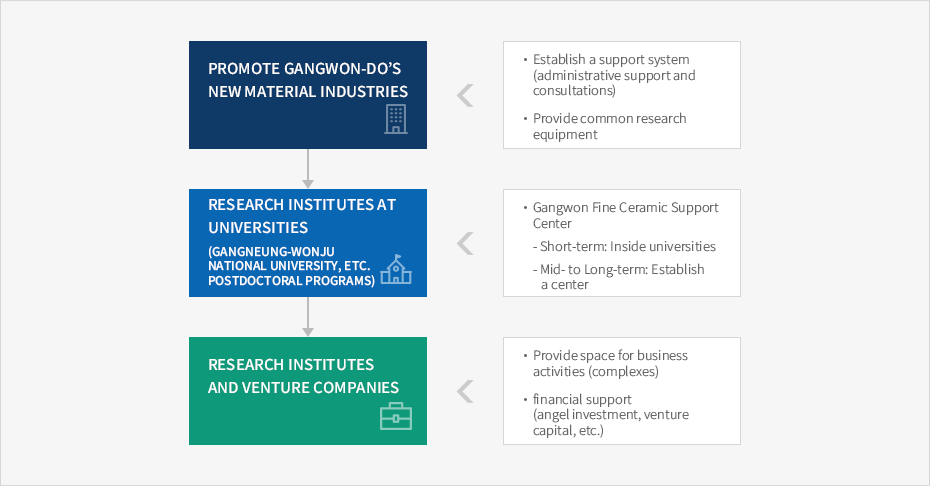

New Materials
- Home
- Business Opportunities
- New Materials
Characteristics of New Material Industry
New material shall mean the material generating high value-added based on the existing raw materials and new raw materials by utilizing new production process and processing technologies to add new functions and characteristics to existing products.
Given the fact that new material is not a end-user's consumer good but a material used in high-tech industry, indirect and external exconomic effect is more significant than the direct economic effect in the industry.
Current Status of Gangwon's New Material Industry
-
Gangwon is a good business place for new material industry because it can connect with existing material companies in the region and the advancement of industrial structure is also prosperous.
- Developed in Gangwon are ceramics, earth & rocks products, non-metals, rare metals, and especially aluminous porcelin, zirconia porcelain, synthetic diamonds, new glass and other structural ceramics, catalyst dimchae ceramics, cementious ceramics, etc.
-
As Gangwon local government is actively putting in place a variety of science & technology policies, creating a good business enviroment for fostering R&D manpower and creating new industry.
- Growing is the necessity of mutual cooperation between industry and academia with the completion of HI-TECH industrial complex and Research Center for Advanced Mineral Aggregate Composite Products.
-
Coupled with its high-speed access to Seoul Metropolitan area, a location that can contribute to rationalizaing production and supply/demand would help develping the new material indstry that characteristically produces various kinds of products in small quantity.
- Facing with Japan where the new material industry is well developed, the east coastal area of Gangwon is a perfect place to seek for cooperation with Japanese new material enterprises.
Central Government's Plan to Foster New Material Industry
- The Ministry of Commerce, Industry & Energy is currently expanding fundamentals for test/analysis/appraisal of the new material industry that carries high value-added as the core materials in electronics, telecommunications, aerospace, medicine and other industries.
- “Ceramic New Material Composite Test/Analysis/Appraisal Center” develps standardize new appraisal methods of ceramic new materials and supports test, analysis and appraisal of the industry through databasing related sources.
- Combined with the fine ceramic pilot plant that is currently under construction, it will fuel development and industrialization in the ceramic new material industry that is heavily dependent upon importings.
Requirements for Nurturing New Material Industry
-
Joint Research by Industry-Academia-Research Institutes.
- The HI-TECH knowledge-based new material industry replace or compliment the existing materials and is utilized as core materials in cutting-edge technologies of automobile, aerospace and IT. It is, so-called, a future-oriented growth engine.
- Joint research activities by industry, academia and research institutes must be activated for developing technologies of small-and-medium enterprises.
- In Gangwon, they establishe an R&D cooperation system around fine ceramics industry.
-
Fostering Manpower
- Highly-educated manpower is urgent for sustainable research capacity in new material industry.
- Expanding internship program to transform the highly-educated manpower specialized in new material into industrial workforce.
- Considering establishment of a new material industry support center that can assist existing material companies in Gangneung with high technologies.
- Gangwon New Material Industry Support Center support technology development in new material, market survey on domestic and overseas demands, analyze industrial conditions and provide guidelines on building new material development and industrialization strategies.
- Building a venture supporting system that can foster bio venture companies in universities and enterprises through laboratory start-up and spin-off start-up, etc.
Gangwon-do’s New Material Industry Promotion Strategy
-
Although an enormous amount is invested in technology development in new material industry, it is not directed to active investment activities by small-and-medium enterprises and large companies over capital stringency and profitability problem, respectively.
- Laying foundations for the industry through R&D support programs for new material industry.
-
Gangwon has more small-and-medium enterprises than other regions in basic material industry.
- Given its locational characteristics, it is necessary to prepare a differentiated strategies for fueling regional industry by nurturing and developing the new material industry.


-
Promote Gangwon-do’s New Material Industries
- Establish a support system (administrative support and consultations)
- Provide common research equipment
-
Research Institutes at Universities (Gangneung-Wonju National University, etc. postdoctoral programs)
-
Gangwon Fine Ceramic Support Center
- Short-term: Inside universities
- Mid- to Long-term: Establish a center
-
Gangwon Fine Ceramic Support Center
-
Research Institutes and Venture Companies
- Provide space for business activities (complexes)
- financial support (angel investment, venture capital, etc.)

Business Environment
Focusing on and Nurturing Fine Ceramics
- Knowledge-concentrating of new material industry requires a system that can provide a comprehensive support in technology, information provision, manpower support and administrative support, etc.
- For that matter, a nw material industry support center is necessary for effective technology and financial support.
-
As new material industry characteristically demands well-educated manpower, it is important to establish a technology manpower center for training to eventually expand labor pool.
- A professional manpower training center is in urgent need for industrializing the manpower from universities.
As new material industry characteristically demands well-educated manpower, it is important to establish a technology manpower center for training to eventually expand labor pool.
- A professional manpower training center is in urgent need for industrializing the manpower from universities.